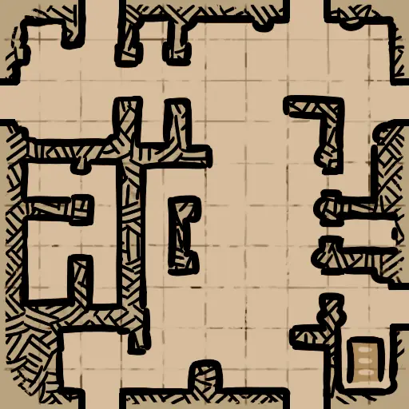

哥布林洞穴1层
哥布林宿舍 (Goblin_Rooms)Cave_Rooms_HR_D.json
Cave_Rooms.png | 找到 1 个位置 | 自动范围: ±1600

蜘蛛洞 (SpiderCave)SpiderCave_02_HR_D.json
SpiderCave_02.png | 找到 1 个位置 | 自动范围: ±1600

废墟2层地牢
中庭 (Atrium)Crypt_Atrium_HR_D.json
Crypt_Atrium.png | 找到 2 个位置 | 自动范围: ±1600

盲坑 (BlindfallPit)Crypt_BlindfallPit_D.json
未找到 | 找到 4 个位置 | 自动范围: ±1600
未找到
地下神坛 (Underground_Altar)UndergroundAltar_HR_D.json
UndergroundAltar.png | 找到 7 个位置 | 自动范围: ±1600

废墟3层炼狱
蝙蝠窝 (Batroost)Inferno_Batroost_HR_D.json
Inferno_Batroost.png | 找到 2 个位置 | 自动范围: ±1600

血腥瀑布 (Bloodyfalls)Inferno_Bloodyfalls_HR_D.json
Inferno_Bloodyfalls.png | 找到 1 个位置 | 自动范围: ±1600

排水沟 (Drain)Inferno_Drain_HR_D.json
Inferno_Drain.png | 找到 2 个位置 | 自动范围: ±1600

百鬼桥 (Hellcrossbridge)Inferno_Hellcrossbridge_HR_D.json
Inferno_Hellcrossbridge.png | 找到 1 个位置 | 自动范围: ±1600

厄风领 (Hellwind)Inferno_Hellwind_HR_D.json
Inferno_Hellwind.png | 找到 2 个位置 | 自动范围: ±1600

腐化尖碑 (Obelisk)Inferno_Obelisk_HR_D.json
Inferno_Obelisk.png | 找到 1 个位置 | 自动范围: ±1600

苦行阶梯 (Painfulsteps)Inferno_Painfulsteps_HR_D.json
Inferno_Painfulsteps.png | 找到 2 个位置 | 自动范围: ±1600

恶魔王座 (Demon_Throne)ThroneRoom_02_HR_D.json
ThroneRoom_02.png | 找到 1 个位置 | 自动范围: ±1600

废墟1层
强盗营地 (Bandit_Camp)Ruins_BanditCamp_HR_D.json
Ruins_BanditCamp.png | 找到 1 个位置 | 自动范围: ±1600

强盗森林 (Bandit_Forest)Ruins_BanditForest_HR_D.json
Ruins_BanditForest.png | 找到 2 个位置 | 自动范围: ±1600

Barbican_01_BossTest (Barbican_01_BossTest)Ruins_Barbican_01_BossTest_D.json
未找到 | 找到 1 个位置 | 自动范围: ±1600
未找到
瓮城 (Barbican)Ruins_Barbican_01_HR_D.json
Ruins_Barbican_01.png | 找到 1 个位置 | 自动范围: ±1600

洗澡堂 (Bath_House)Ruins_Bath_HR_D.json
Ruins_Bath.png | 找到 1 个位置 | 自动范围: ±1600

乱葬岗 (Outer_Cemetery)Ruins_Cemetery_01_HR_D.json
Ruins_Cemetery_01.png | 找到 2 个位置 | 自动范围: ±1600

森林 B (Forest_B)Ruins_Forest_02_HR_D.json
Ruins_Forest_02.png | 找到 1 个位置 | 自动范围: ±1600

迷失森林 (Fallen_Forest)Ruins_Forest_06_HR_D.json
Ruins_Forest_06.png | 找到 1 个位置 | 自动范围: ±1600

GreatHall_01_Destroyed_BossTest (GreatHall_01_Destroyed_BossTest)Ruins_GreatHall_01_Destroyed_BossTest_D.json
未找到 | 找到 2 个位置 | 自动范围: ±1600
未找到
礼拜堂 A (Greathall_A)Ruins_GreatHall_01_Destroyed_HR_D.json
Ruins_GreatHall_01_Destroyed.png | 找到 2 个位置 | 自动范围: ±1600

礼拜堂 B (Greathall_B)Ruins_GreatHall_02_Destroyed_HR_D.json
Ruins_GreatHall_02_Destroyed.png | 找到 1 个位置 | 自动范围: ±1600

礼拜堂 C (Greathall_C)Ruins_GreatHall_03_Destroyed_HR_D.json
Ruins_GreatHall_03_Destroyed.png | 找到 1 个位置 | 自动范围: ±1600

广场 B (Square_B)Ruins_Square_02_HR_D.json
Ruins_Square_02.png | 找到 3 个位置 | 自动范围: ±1600

塔桥 (Tower_Bridge)Ruins_TowerBridge_Destroyed_HR_D.json
Ruins_TowerBridge_Destroyed.png | 找到 1 个位置 | 自动范围: ±1600

废弃塔楼 (Destroyed_Tower)Ruins_Tower_01_Destroyed_HR_D.json
Ruins_Tower_01_Destroyed.png | 找到 2 个位置 | 自动范围: ±1600

隐蔽圣坛 (Hidden_Altar)Ruins_UndergroundAltar_01_HR_D.json
Ruins_UndergroundAltar_01.png | 找到 3 个位置 | 自动范围: ±1600

饮水池 (Watering_Hole)Ruins_WaterHole_HR_D.json
Ruins_WaterHole.png | 找到 1 个位置 | 自动范围: ±1600

水图
海盗监狱 (PiratePrison)ShipGraveyard_PiratePrison_HR_D.json
ShipGraveyard_PiratePrison.png | 找到 2 个位置 | 自动范围: ±6400

海星谷 (ShipGraveyard_StarfishValley)ShipGraveyard_StarfishValley_D.json
ShipGraveyard_StarfishValley.png | 找到 2 个位置 | 自动范围: ±1600